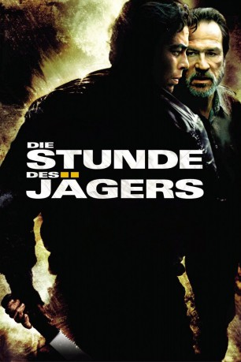

#2092 Die Stunde des Jägers
Alternativ: The Hunted
 
 IMDB-Wertung: 6.0 / 10
IMDB-Wertung: 6.0 / 10  Metascore: 40
Metascore: 40 
Aaron Hallam war früher Agent einer US-Spezialeinheit im Kosovo. Da ihn Erinnerungen an die Vergangenheit zunehmend plagen, entsagt er dem Dienst, obwohl er für seinen Einsatz sogar ausgezeichnet worden ist. Heute hat er sich zurückgezogen und muss sich selber vor Attentätern schützen. Mit lediglich einem Messer gelingt es ihm, sich an sie von hinten heranzuschleichen und sie zu ermorden. Als das FBI auf mehrere Verluste aufmerksam wird, hilft der ehemalige Ausbilder für Einzelkämpfer, L.T. Bonham dem FBI unter Leitung von Agentin Abby Durrell. Bald ist klar, dass es sich bei den Gesuchten um einen früheren Elite-Soldaten der US-Army handelt. Bonham sollte er bestens bekannt sein, denn Hallam hat ihm in der Vergangenheit mehrere Briefe geschickt, die Bonham bisher missachtet hat. Ein blutige Katz- und Maus-Spiel zwischen ehemaligem Schüler und Lehrer beginnt.
Jahr: 2003
Dauer: 94 Minuten
FSK: 18
Land: USA Studio: Paramount PicturesTonspuren: DTS - ,
Untertitel:
Auflösung: 1080p (1920x1080) Größe: 8632 MB
Genre: Action, Thriller, Drama, Krimi
Regisseur:  William Friedkin
William Friedkin
Drehbuch: David Griffiths, Peter Griffiths, Art Monterastelli
Soundtrack: Brian Tyler
Darsteller:
 Tommy Lee Jones als L.T. Bonham
Tommy Lee Jones als L.T. Bonham Benicio Del Toro als Aaron Hallam
Benicio Del Toro als Aaron Hallam Connie Nielsen als Abby Durrell
Connie Nielsen als Abby Durrell Leslie Stefanson als Irene Kravitz
Leslie Stefanson als Irene Kravitz John Finn als Ted Chenoweth
John Finn als Ted Chenoweth José Zúñiga als Bobby Moret
José Zúñiga als Bobby Moret Ron Canada als Harry Van Zandt
Ron Canada als Harry Van Zandt Mark Pellegrino als Dale Hewitt
Mark Pellegrino als Dale Hewitt- Jenna Boyd als Loretta Kravitz
- Carrick O'Quinn als Kohler
 Rex Linn als Powell
Rex Linn als Powell- Eddie Velez als Richards
- Alexander MacKenzie als Sheriff
- Robert Thomas Preston als Boy at Airport
- Nathan Sabatka als Boy at Airport
- Neno Pervan als Serb Guard
 Zoran Radanovich als Serb Guard
Zoran Radanovich als Serb Guard- Caitlin Marie Clements als Girl in Kosovo
 Robert Blanche als Crumley , uncredited
Robert Blanche als Crumley , uncredited- Johnny Cash als Narrator , uncredited
- William Joseph Elk III als Motorcycle Guy , uncredited
- Den Erickson als Survival Class Extra , uncredited
- Peter Simpson als Deputy Sheriff , uncredited
- Tara Walker als Kosovoan Refugee , uncredited
- Aaron DeCone als Stokes
 Lonny Chapman als Zander
Lonny Chapman als Zander- Hank Cartwright als Construction Foreperson
- Gary Taylor als Tactical Commander
- Michael Williamson als Tactical Agent
- Alisha Garric als Girl at Airport
- Jeff Gianola als TV Reporter
- Brent Braun als FBI Field Agent
- Steve Enfield als FBI Field Agent
 Mike White als Delta Colonel
Mike White als Delta Colonel- Mio R. Jakula als Serb Commander
- Anjenique Hughes als Business Woman , uncredited
- John Keyser als FBI Agent , uncredited
- Michelle Kinne als Car Passenger , uncredited
- Christopher Mead als K9 Officer , uncredited
- Erin Michael als Store Owner , uncredited
- Zamin Mirza als Serb Soldier , uncredited
- Katie O'Grady als Mother , uncredited
- Devon Walker als Kosovoan Refugee , uncredited
- Evis Xheneti als Kosovoan Refugee , uncredited
Datei: X:\FSK18-2000-2009\Stunde des Jägers, Die (2003, FSK18, 1920x1080).mkv seit 02.10.2015
Festplatte: FSK18
 Es gibt insgesamt 106 Filme in der Gruppe 'FSK18-2000-2009'
Es gibt insgesamt 106 Filme in der Gruppe 'FSK18-2000-2009'